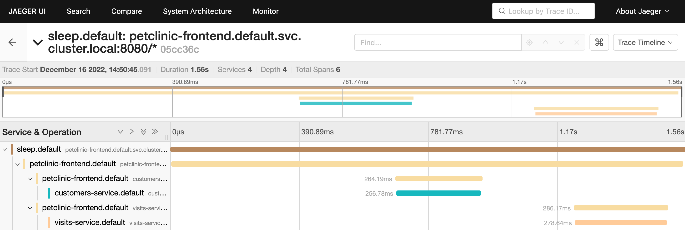

Observability
Distributed Tracing¶
The Istio documentation dedicates a page to guide users on how to propagate trace headers in calls between microservices, in order to support distributed tracing.
In this version of PetClinic, all Spring Boot microservices have been configured to propagate trace headers using micrometer-tracing.
Micrometer tracing is an elegant solution, in that we do not have to couple the trace header propagation with the application logic. Instead, it becomes a simple matter of static configuration.
See the application.yaml resource files and the property management.tracing.baggage.remote-fields which configures the fields to propagate.
To make testing this easier, Istio is configured with 100% trace sampling.
Observe distributed traces¶
In its samples directory, Istio provides sample deployment manifests for various observability tools, including Zipkin and Jaeger.
Deploy Jaeger to your Kubernetes cluster:
-
Navigate to the base directory of your Istio distribution:
-
Deploy jaeger:
-
Wait for the Jaeger pod to be ready:
Next, let us turn our attention to calling an endpoint that will generate a trace capture, and observe it in the Jaeger dashboard:
-
Call the
petclinic-frontendendpoint that calls both thecustomersandvisitsservices. Feel free to make mulitple requests to generate multiple traces. -
Launch the jaeger dashboard:
-
In Jaeger, search for traces involving the services
petclinic-frontend,customers, andvisits.
You should see one or more traces, each with six spans. Click on any one of them to display the full end-to-end request-response flow across all three services.

Close the Jaeger dashboard.
Exposing metrics¶
Istio has built-in support for Prometheus as a mechanism for metrics collection.
Each Spring Boot application is configured with a micrometer dependency to expose a scrape endpoint for Prometheus to collect metrics.
Call the scrape endpoint and inspect the metrics exposed directly by the Spring Boot application:
Separately, Envoy collects a variety of metrics, often referred to as RED metrics, for: Requests, Errors, and Durations.
Inspect the metrics collected and exposed by the Envoy sidecar:
One common metric to note is the counter istio_requests_total:
kubectl exec deploy/customers-v1 -c istio-proxy -- \
curl -s localhost:15090/stats/prometheus | grep istio_requests_total
Both the application metrics and envoy's metrics are aggregated (merged) and exposed on port 15020:
What allows Istio to aggregate both scrape endpoints are annotations placed in the pod template specification for each application, communicating the URL of the Prometheus scrape endpoint.
For example, here are the prometheus annotations for the customers service.
For more information on metrics merging and Prometheus, see the Istio documentation.
Send requests to the application¶
To send a steady stream of requests through the petclinic-frontend application, we use siege. Feel free to use other tools, or maybe a simple bash while loop.
Run the following siege command to send requests to various endpoints in our application:
Leave the siege command running.
Open a separate terminal in which to run subsequent commands.
The Prometheus dashboard¶
Deploy Prometheus to your Kubernetes cluster:
The latest version of Spring Boot (3.2) takes advantage of a relatively recent feature of Prometheus known as "exemplars." The current version of Istio uses an older version of Prometheus (2.41) that does not yet support exemplars.
Before deploying Prometheus, patch the prometheus deployment to use the latest version of the image:
prom-patch.yaml
Launch the Prometheus dashboard:
Here are some PromQL queries you can try out, that will fetch metrics from Prometheus' metrics store:
-
The number of requests made by
petclinic-frontendto thecutomersservice: -
A business metric exposed by the application proper: the number of calls to the
findPetmethod:
Istio's Grafana metrics dashboards¶
Istio provides standard service mesh dashboards, based on the standard metrics collected by Envoy and sent to Prometheus.
Deploy Grafana:
Launch the Grafana dashboard:
Navigate to the dashboards section, you will see an Istio folder.
Select the Istio service dashboard.
Review the Istio Service Dashboards for the services petclinic-frontend, vets, customers, and visits.
The dashboard exposes metrics such as the client request volume, client success rate, and client request durations:

PetClinic custom Grafana dashboard¶
The version of PetClinic from which this version derives already contained a custom Grafana dashboard.
To import the dashboard into Grafana:
- Navigate to "Dashboards"
- Click the "New" pulldown button, and select "Import"
- Select "Upload dashboard JSON file", and select the file
grafana-petclinic-dashboard.jsonfrom the repository's base directory. - Select "Prometheus" as the data source
- Finally, click "Import"
The top two panels showing request latencies and request volumes are technically now redundant: both are now subsumed by the standard Istio dashboards.
Below those panels are custom application metrics. Metrics such as number of owners, pets, and visits created or updated.
Create a new Owner, give an existing owner a new pet, or add a visit for a pet, and watch those counters increment in Grafana.
Kiali¶
Kiali is a bespoke "console" for Istio Service Mesh. One of the features of Kiali that stands out are the visualizations of requests making their way through the call graph.
-
Cancel the currently-running siege command. Relaunch siege, but with a different set of target endpoints:
-
Deploy Kiali:
-
Launch the Kiali dashboard:
Select the Graph view and the
defaultnamespace.The flow of requests through the applications call graph will be rendered.